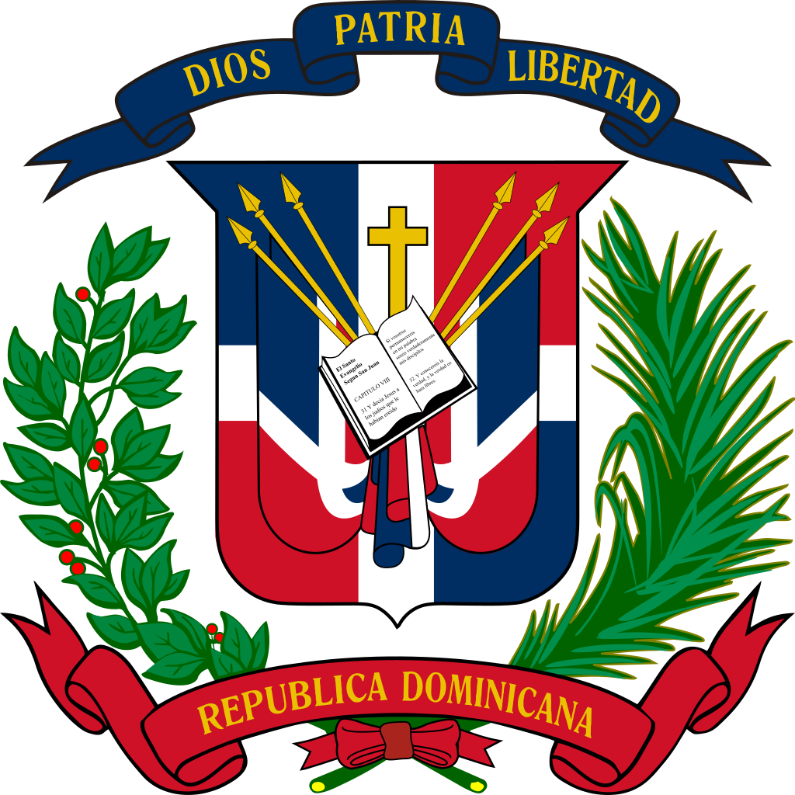

____
Флаг
Государственный флаг Доминиканской Республики — принят 14 сентября 1863 года. Синий цвет означает свободу, белый — веру и спасение, а красный — кровь и независимость.

Герб
государственный символ Доминиканской Республики. Был принят в 1844 году и после изменения ряда деталей приобрел современный вид к 1896 году.
Представляет собой щит, на котором помещены религиозные символы: крест и Библия, открытая на восьмой главе Евангелия от Иоанна, 8:32, гласящей „Y la verdad os hará libres“ («И Истина сделает вас свободными»). Крест и Библия обрамлены двумя парами национальных флагов и двумя копьями. Крест символизирует также освобождение от колониального рабства, а копья напоминают о победах доминиканцев над испанскими, французскими и гаитянскими захватчиками. Щит окружен лавровой и пальмовой ветвями — символами славы и мира, связанными лентой национальных сине-красных цветов.

____